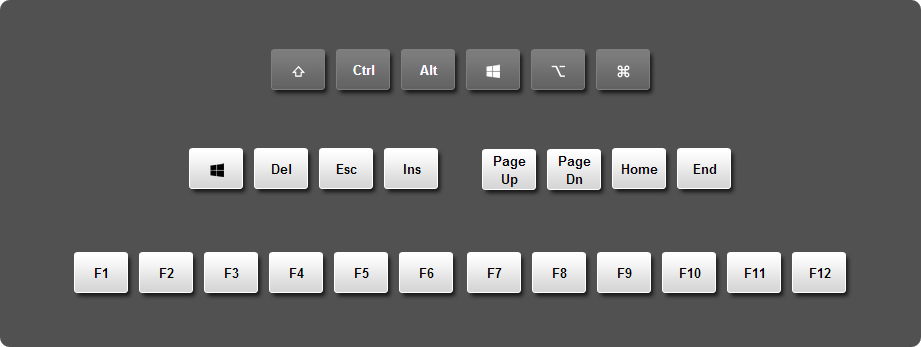
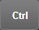
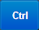
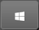

Using the toolbar
VNC Viewer has a toolbar containing buttons to perform key operations:
The toolbar appears at the bottom center of the web browser window. Hover the mouse over the stub if it is not visible. Pin the toolbar to show it permanently; otherwise, it disappears after a few seconds.
If the host computer's desktop is larger than the web browser window, scroll bars appear.
If you trigger full screen, bump the mouse cursor against an edge to scroll.
Performing particular keyboard operations
While the web browser window has focus, most keyboard key presses affect the host computer, so you should be able to type normally. However, certain important keys and key combinations affect the client computer instead. For example, pressing the Start key causes the Start menu to appear on the client rather than on the host computer (assuming both are running Windows).
To send modifier, function, and other important keyboard keys to the host computer, click to open the virtual keyboard:

On the virtual keyboard, note that:
Ctrl are dark gray . Clicking one turns it blue  to indicate the key is held down ready to modify the next key press only.Windows (or Super) key appears twice: once as a modifier  and once as a single-press key. Click the former to perform a shortcut on the host computer, for example Windows+D to show the desktop under Windows. Click the latter to open the Start menu on a Windows host computer.Command (or Apple) key to a Mac host computer. Click to send the Option key.Tweaking performance
For connections to computers running VNC, or legacy VNC Enterprise Edition or VNC Personal Edition, you can trade picture quality for speed and vice versa while the connection is in progress.
To do this, click and then open Picture Quality. Choose Low to make the connection faster but see potentially less detail, High to have full color at a potential cost in speed, or let the host computer decide.
If you retain the default Automatic option, VNC Viewer automatically optimizes performance according to the speed of the network connection.
Viewing connection information
Click to bring up information about the current connection. This may be useful if you contact Technical Support.
Note that only connections to host computers running VNC with a Personal or an Enterprise license, or legacy VNC Enterprise Edition or VNC Personal Edition, are encrypted end-to-end (though authentication credentials are always encrypted).
The level of encryption is determined by VNC Server. Upgrade your computer to this technology if security is important to you.
Closing the connection
Click and then Disconnect to close the current connection. Alternatively, close the web browser tab or the Google Chrome window itself.